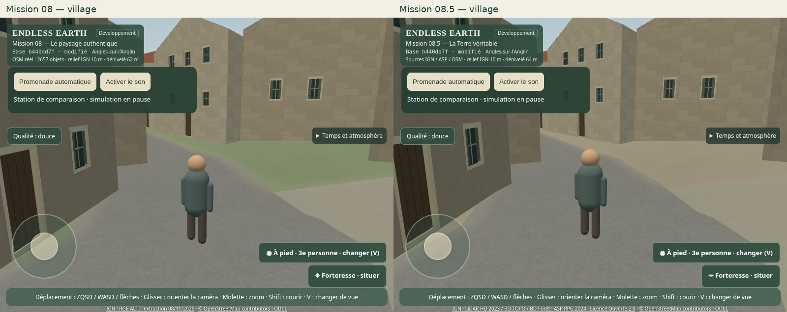
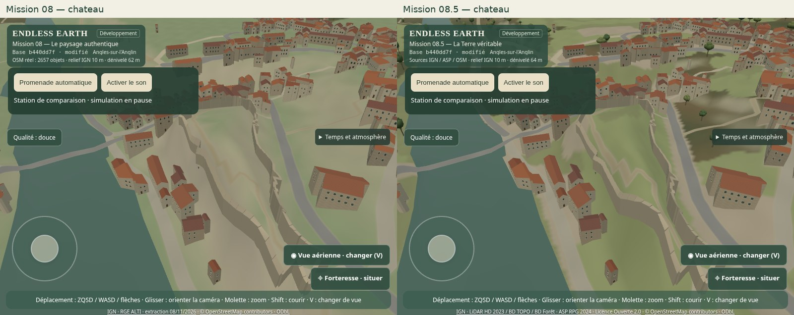
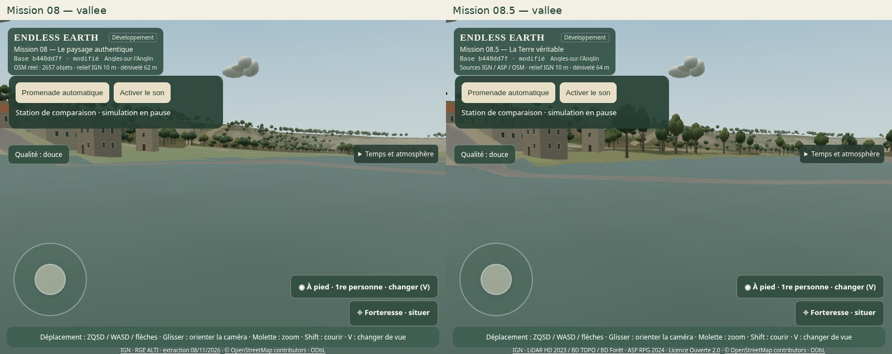
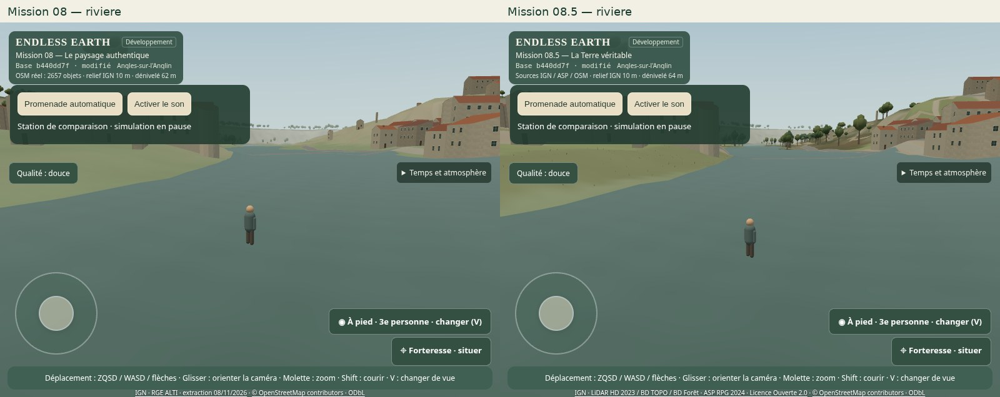
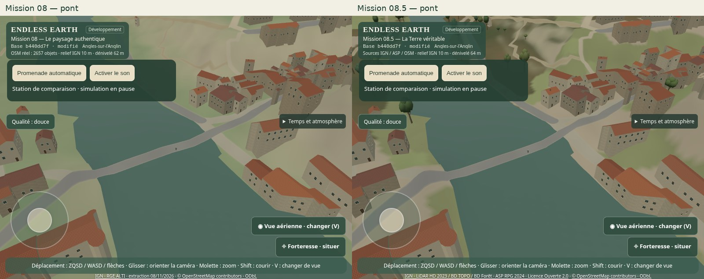
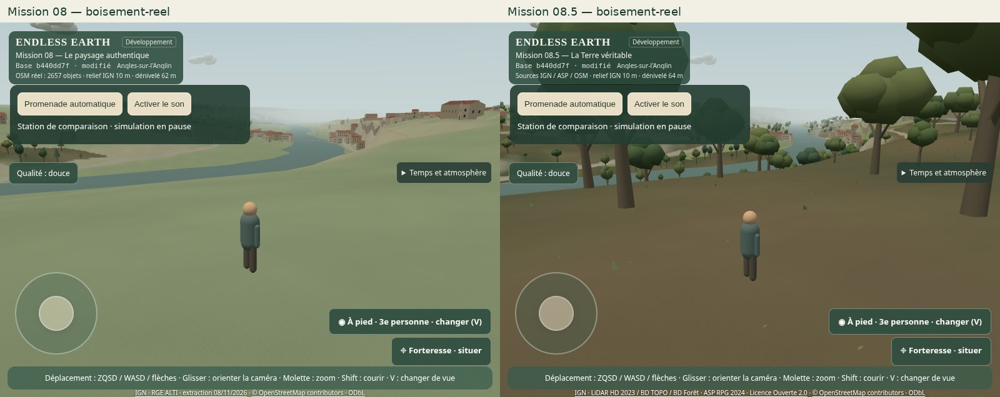
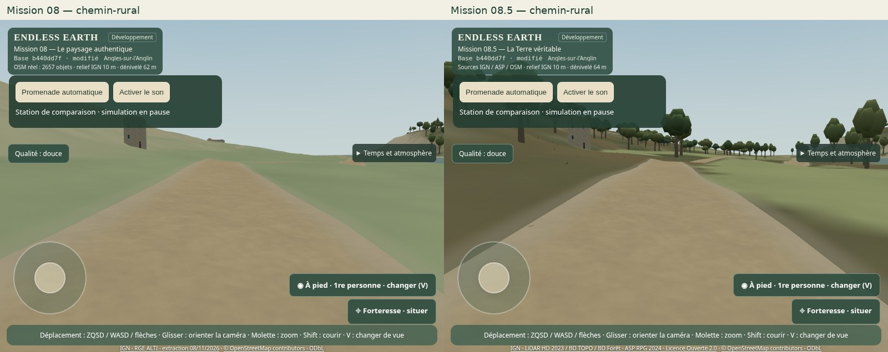
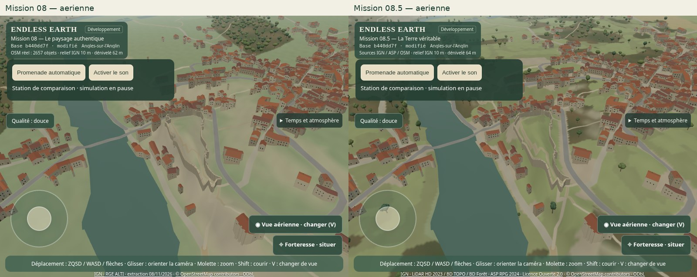
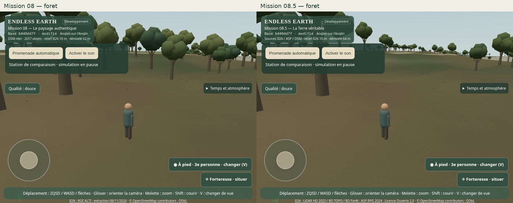
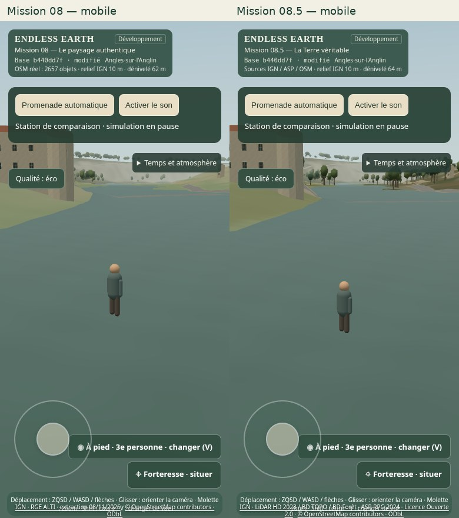

Caméras géographiques identiques (position, altitude absolue IGN69, orientation), éclairage figé. Les arbres et matériaux restent procéduraux. La station « foret » historique est désormais identifiée comme terrain agricole ; « boisement-reel » montre un boisement OCS GE 2023.









